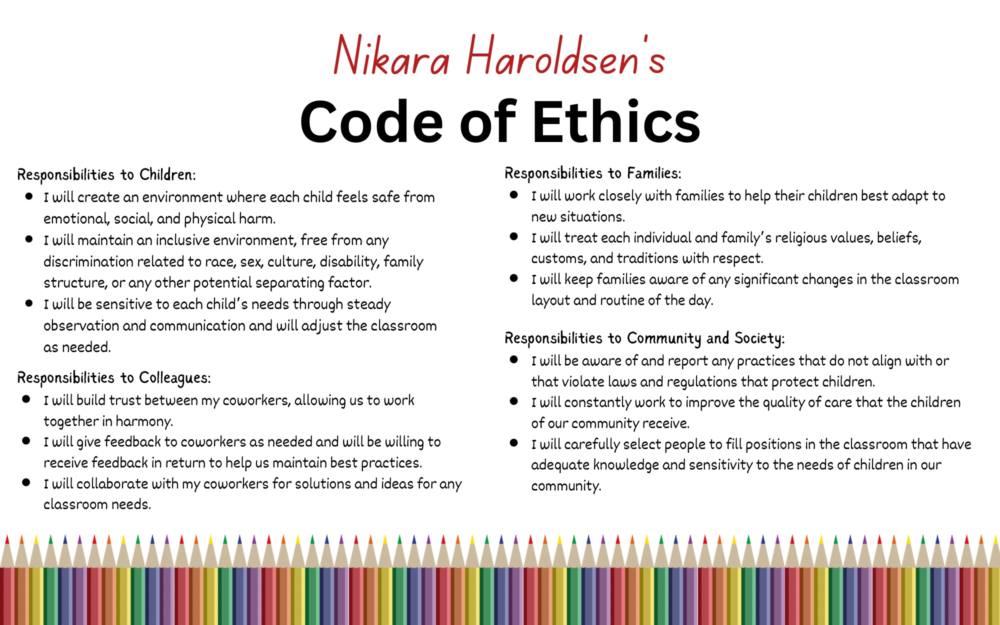

Nikara Haroldsen
- Bachelor of Science in Child Development -
CODE OF ETHICS
MY ETHICAL COMMITMENT
This document outlines my commitment to be ethical in my interactions with children, families, colleagues, and society. I believe ethical commitment is crucial because children are the future. We cannot afford to mistreat or misdirect their potential. When reviewing this document, you will find that I value creating a legacy of integrity.
Check it out!